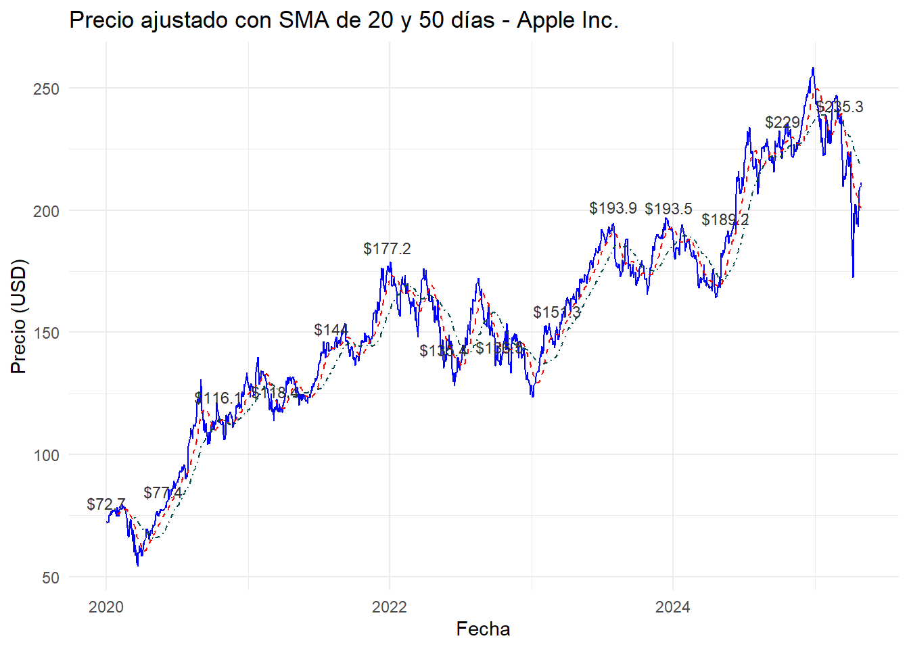
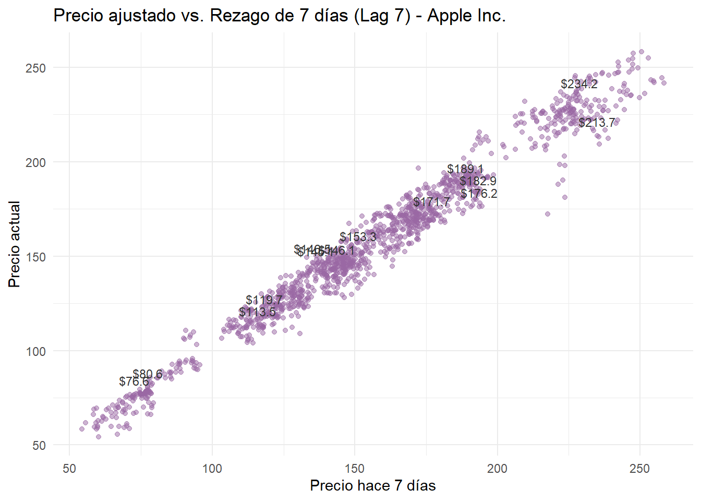
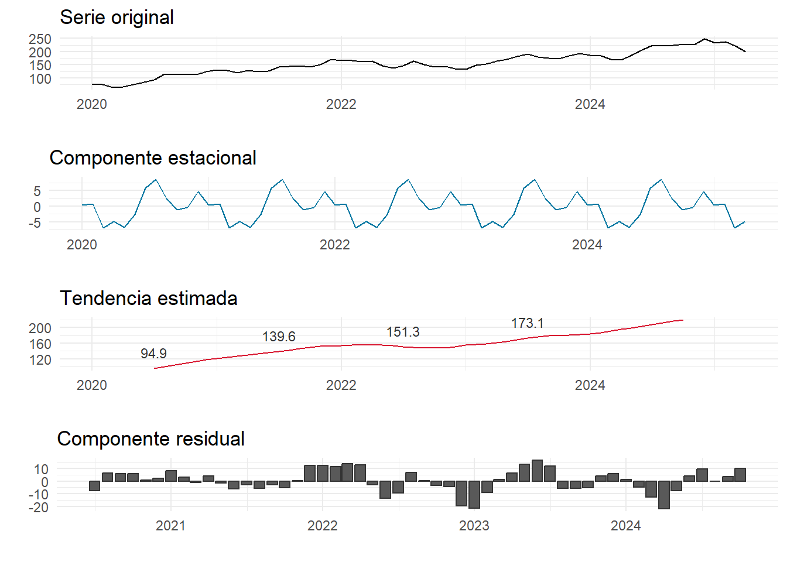

Capitulo2 Análisis Exploratorio y Comportamiento Temporal de AAPL.
2.1 Descarga y visualización inicial.
Los datos se obtienen utilizando el paquete tidyquant, que permite extraer cotizaciones bursátiles directamente desde Yahoo Finance.
# Instalar y cargar paquetes
if (!require("tidyquant")) install.packages("tidyquant")
library(tidyquant)
# Descargar datos históricos desde Yahoo Finance
apple_data <- tq_get("AAPL", from = "2020-01-01", to = "2025-04-30")
# Vista previa
head(apple_data)| symbol | date | open | high | low | close | volume | adjusted |
|---|---|---|---|---|---|---|---|
| AAPL | 2020-01-02 | 74.0600 | 75.1500 | 73.7975 | 75.0875 | 135480400 | 72.62085 |
| AAPL | 2020-01-03 | 74.2875 | 75.1450 | 74.1250 | 74.3575 | 146322800 | 71.91485 |
| AAPL | 2020-01-06 | 73.4475 | 74.9900 | 73.1875 | 74.9500 | 118387200 | 72.48784 |
| AAPL | 2020-01-07 | 74.9600 | 75.2250 | 74.3700 | 74.5975 | 108872000 | 72.14695 |
| AAPL | 2020-01-08 | 74.2900 | 76.1100 | 74.2900 | 75.7975 | 132079200 | 73.30753 |
| AAPL | 2020-01-09 | 76.8100 | 77.6075 | 76.5500 | 77.4075 | 170108400 | 74.86463 |
2.2 Evolución del precio ajustado.
A continuación, se muestra el comportamiento del precio de cierre ajustado de AAPL, incluyendo etiquetas para resaltar puntos de referencia en la serie.
# Librerias
library(ggplot2)
library(tidyquant)
# Cargar datos si no están cargados
apple_data <- tq_get("AAPL", from = "2020-01-01", to = "2025-04-30")
apple_data <- na.omit(apple_data)
# Seleccionar solo algunos puntos clave para etiquetar (ej: cada 250 días)
etiquetas <- apple_data[seq(1, nrow(apple_data), by = 250), ]
# Gráfico con línea y etiquetas del mismo color
ggplot(apple_data, aes(x = date, y = adjusted)) +
geom_line(color = "blue", size = 0.3) +
geom_text(
data = etiquetas,
aes(label = paste0("$", round(adjusted, 1))),
color = "gray20", size = 3, vjust = -1
) +
labs(
title = "Precio de cierre ajustado - Apple Inc.",
x = "Fecha",
y = "Precio (USD)"
) +
theme_minimal(base_size = 12)
2.3 Análisis con promedios móviles.
Se calculan promedios móviles simples de 20 y 50 días para detectar tendencias a corto y mediano plazo.
# Librerias
library(TTR)
library(ggplot2)
library(tidyquant)
library(dplyr)
# Obtener y preparar datos
apple_data <- tq_get("AAPL", from = "2020-01-01", to = "2025-04-30")
apple_data <- na.omit(apple_data)
# Calcular SMA
apple_data <- apple_data %>%
mutate(
SMA20 = SMA(adjusted, n = 20),
SMA50 = SMA(adjusted, n = 50)
)
# Seleccionar puntos cada 100 días para etiquetar
etiquetas <- apple_data[seq(1, nrow(apple_data), by = 100), ]
# Graficar con etiquetas
ggplot(apple_data, aes(x = date)) +
geom_line(aes(y = adjusted), color = "blue", size = 0.4) +
geom_line(aes(y = SMA20), color = "red", size = 0.5, linetype = "dashed") +
geom_line(aes(y = SMA50), color = "#004949", size = 0.5, linetype = "dotdash") +
# Etiquetas para línea principal (precio ajustado)
geom_text(
data = etiquetas,
aes(x = date, y = adjusted, label = paste0("$", round(adjusted, 1))),
color = "gray20", size = 3, vjust = -1
) +
labs(
title = "Precio ajustado con SMA de 20 y 50 días - Apple Inc.",
x = "Fecha",
y = "Precio (USD)"
) +
theme_minimal()
2.4 Análisis de rezagos.
Este gráfico representa la relación entre el valor actual y el precio de 7 días anteriores.
# Librerias
library(dplyr)
library(ggplot2)
library(tidyquant)
# Obtener datos y preparar
apple_data <- tq_get("AAPL", from = "2020-01-01", to = "2025-04-30")
apple_data <- na.omit(apple_data)
# Calcular rezagos de 1, 7 y 30 días
apple_data <- apple_data %>%
mutate(
lag_1 = lag(adjusted, 1),
lag_7 = lag(adjusted, 7),
lag_30 = lag(adjusted, 30)
)
# Filtrar datos válidos para graficar (sin NA en lag_7)
datos_lag7 <- apple_data %>%
filter(!is.na(lag_7))
# Seleccionar puntos para etiquetas (cada 100)
etiquetas_lag7 <- datos_lag7[seq(1, nrow(datos_lag7), by = 100), ]
# Gráfico de rezago de 7 días con etiquetas
ggplot(datos_lag7, aes(x = lag_7, y = adjusted)) +
geom_point(alpha = 0.5, color = "#9A68A4") +
geom_text(
data = etiquetas_lag7,
aes(label = paste0("$", round(adjusted, 1))),
color = "gray20", size = 3, vjust = -1
) +
labs(
title = "Precio ajustado vs. Rezago de 7 días (Lag 7) - Apple Inc.",
x = "Precio hace 7 días",
y = "Precio actual"
) +
theme_minimal()
2.5 Descomposición estacional.
Se descompone la serie mensual para observar los componentes de tendencia, estacionalidad y ruido.
# Librerías
library(tidyquant)
library(dplyr)
library(ggplot2)
library(gridExtra)
# Descargar y preparar datos
apple_data <- tq_get("AAPL", from = "2020-01-01", to = "2025-04-30")
apple_data <- na.omit(apple_data)
# Agregar mes y promedio mensual
apple_mensual <- apple_data %>%
mutate(month = format(date, "%Y-%m")) %>%
group_by(month) %>%
summarise(promedio_mensual = mean(adjusted)) %>%
ungroup()
# Convertir a serie de tiempo (mensual)
ts_appl <- ts(apple_mensual$promedio_mensual, start = c(2020, 1), frequency = 12)
# Descomposición clásica
descomposicion <- decompose(ts_appl)
# Extraer componentes
original <- descomposicion$x
seasonal <- descomposicion$seasonal
trend <- descomposicion$trend
random <- descomposicion$random
# Crear fechas mensuales para etiquetar
fechas <- seq(as.Date("2020-01-01"), by = "month", length.out = length(original))
# DataFrames para graficar
df <- data.frame(
Fecha = fechas,
Original = as.numeric(original),
Estacional = as.numeric(seasonal),
Tendencia = as.numeric(trend),
Residual = as.numeric(random)
)
# Etiquetas de tendencia (cada 12 meses)
etiquetas <- df %>%
filter(!is.na(Tendencia)) %>%
slice(seq(1, n(), by = 12))
# Graficar los componentes
library(gridExtra)
p1 <- ggplot(df, aes(x = Fecha, y = Original)) +
geom_line() +
labs(title = "Serie original", y = "", x = "") +
theme_minimal()
p2 <- ggplot(df, aes(x = Fecha, y = Estacional)) +
geom_line(color = "#0078A2") +
labs(title = "Componente estacional", y = "", x = "") +
theme_minimal()
p3 <- ggplot(df, aes(x = Fecha, y = Tendencia)) +
geom_line(color = "#D8152F") +
geom_text(
data = etiquetas,
aes(label = round(Tendencia, 1)),
color = "gray20", size = 3, vjust = -1
) +
labs(title = "Tendencia estimada", y = "", x = "") +
theme_minimal()
p4 <- ggplot(df, aes(x = Fecha, y = Residual)) +
geom_col(color = "gray20") +
labs(title = "Componente residual", y = "", x = "") +
theme_minimal()
# Mostrar juntos
gridExtra::grid.arrange(p1, p2, p3, p4, ncol = 1)